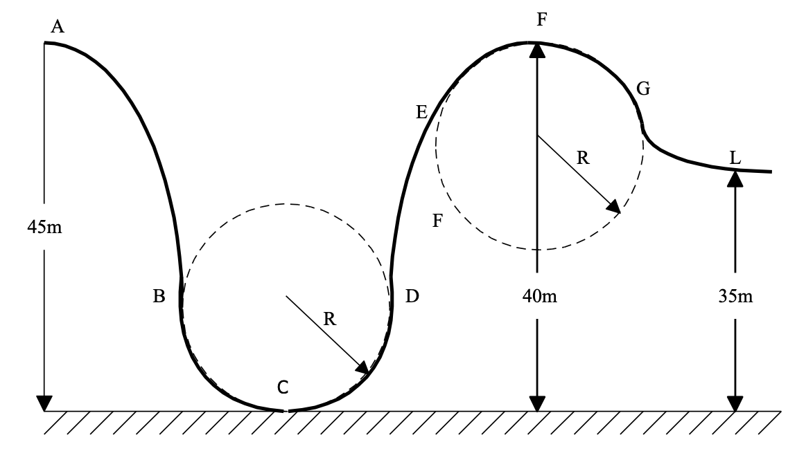

שאלה 2
העקומה ACFL שבתרשים מתארת מסילה של רכבת הרים בפארק שעשועים. הגבהים של הנקודות A, F ו-L נתונים בתרשים. קטעי המסילה BCD ו-EFG הם קשתות מעגליות בעלות רדיוס R. בנקודה A נמצאת קרונית ובתוכה כיסא שעליו מותקן מד משקל. תלמיד שמסתו m מתיישב בנקודה A על מד המשקל שבקרונית. כפות רגליו אינן נוגעות ברצפת הקרונית. במצב זה הוריית מד המשקל היא mg. הקרונית עם התלמיד בתוכה יוצאת לדרכה מנקודה A במהירות התחלתית אפס. לקרונית אין מנוע והיא נעה כל הזמן על המסילה, מבלי להינתק ממנה. המסילה חלקה פרט לקטע GL, שבו קיים חיכוך בין הקרונית למסילה. כאשר הקרונית עם התלמיד חולפת דרך הנקודה F, הוריית מד המשקל היא אפס.

מהי מהירות הקרונית בחולפה דרך הנקודה F? (9 נק')
מצאו את הרדיוס R של הקשתות המעגליות BCD ו-EFG. (9 נק')
באיזו נקודה של המסילה הוריית מד המשקל הינה מקסימלית?
בטאו את הוריית מד המשקל בנקודה זו, באמצעות מסתו (m) של התלמיד וקבועים פיזיקליים מוכרים. (9 נק')
נתון כי מסתה של הקרונית עם התלמיד בתוכה הינה 150 ק"ג וכי היא חולפת דרך הנקודה L במהירות 8 מטר לשנייה.
חשבו את עבודת כוח החיכוך בקטע GL. (6.33 נק')